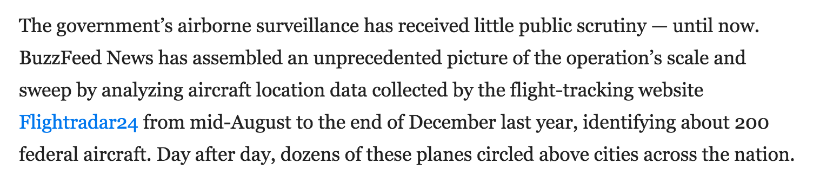
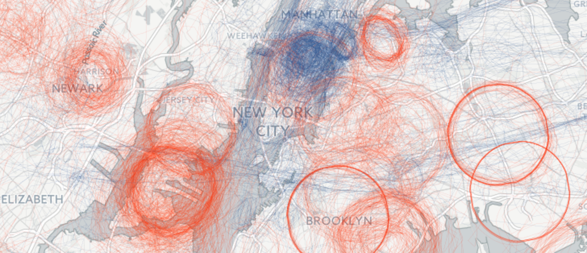
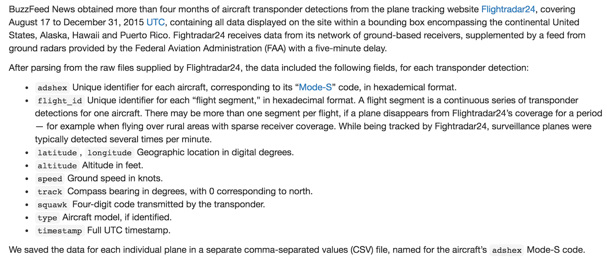
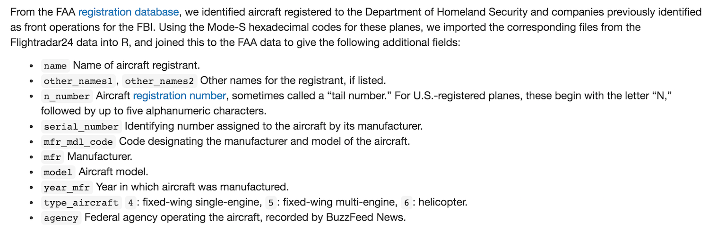

Finding stories in data
• Automation: let the data do the work
• Creating, collecting and curating datasets: making unique datasets your trusted source
Automation
• Automate quantity to free up time and resources for quality
Automation
Case study: FT | Economic dashboards

Automation
Case study: FT | Economic dashboards

Automation
Case study: FT | EU referendum poll-tracker
Automation
• Exercise: what would be the economic dashboard equivalent for your beat?
• Repetitive tasks
• Inefficient use of your time and ability
Data as source
This is increasingly where the value lies
More and more journalists of all descriptions are capable of locating and working with published datasets
// Spreadsheet journalism != data journalism
Data as source
So...
The real value is to be found in developing your own datasets. Broadly speaking, this can be done in three ways:
• Creating a dataset ex nihilo
• Collecting or curating datasets to create something worth more than the sum of its parts
• Working with data in cruel and unusual formats
Creating a dataset
Case study: QZ | We brought an antenna to Davos to track private air travel, and here’s what we found

Creating a dataset
Case study: BuzzFeed | Spies in the skies
 Creating a dataset
Case study: BuzzFeed | Spies in the skies (nerdy bit)
 Creating/collecting
Case study: New York Times | The Cost of Mobile Ads on 50 News Websites

Specialist data formats
Case study: FT | West Ham vice-chair Brady warns of Brexit own-goal

Data as source
Other areas
• Geographical data, e.g store locators
• Satellite imagery: land-use change, South-China Sea
• LinkedIn: employee turnover, connections
Resources
• R, Python, general web-scraping
• QGIS
• d3